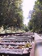
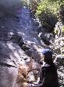

In and Around New Hampshire
We got up and had breakfast at a small coffee shop on the hotel complex. Then on with our adventure.
Our first stop was the Echo Lake State Park. We followed the road up to Cathedral ledge and had a walk around at the top, looking down over the valley. We drove down to the lake with the roof down which was really refreshing. We had a look around the lake but it was a bit too cold to linger so we returned to the car.
We then headed off to the Attitash ski area as there is a luge ride but we were too late in the season to play during the week although it still operates on a weekend.
So, we headed off to Crawford Notch State Park as it has a system of short trails. We drove to the Willey house site and picked up an information sheet about the walks. The Arethusa Falls walk sounded lovely, but after doing a short bit of it we turned back as we weren't properly prepared for a 2 hour walk. Instead we decided to do the Ripley Falls trail. This follows the Appalachian trail for 0.25 mile or so before diverting towards the falls. The falls were beautiful and the area was really peaceful.
We headed back to the car and drove back to the Visitor's Centre in search of some lunch. One of the day's specials was Veggie Chilli so we had a good warmingbowl each.
We headed on again and pulled in at the viewpoint overlooking Bretton Woods. This is the hotel where President Roosevelt brought the world leaders in July 1944 to discuss the world economy. It has a wonderful situation with Mount Washington behind it.
We headed off on the base road to the Cog Railway station to look at the trains, the tracks and the mountain. The trip takes 3 hours (there and back), and the temperature at the summit was estimated at 30F. We weren't prepared for such cold and so gave it a miss.
Instead we headed to the Wildcat mountain ski area and took the gondola skyride to the top. It was around 40F at the summit (approx 3,900 feet) and so was a bit more manageable. We stood on the Observation deck and got some pretty spectacular views.
Enough of being in the outdoors - so we headed back into North Conway and did a spot of light shopping before going back to the hotel room.
After some time relaxing we headed down to "Flatbread Company" an organic pizza place attached to the hotel. The toppings were unusual and the one we shared was very enjoyable. And another pint of Tuckermans Ale each as well - lovely.
(23 images.)
Back to index
Rich amongst the trees |
Trees and sunlight |
The lake |
Jane |
Leaves |
The lake again |
Trees |
Trees |
Scenic railway line | 
and from rail level |
Jane and the Apalachian trail sign |
Leaves and light |
Ripley Falls | 
Jane and the Ripley Falls |
Ripley Falls |
Rich walks off |
Foliage season starting |
Bretton Woods hotel |
Railroad crossing |
View from the top of Wildcat |

Another view |
In the woods |
Cable car going up |
Back to index